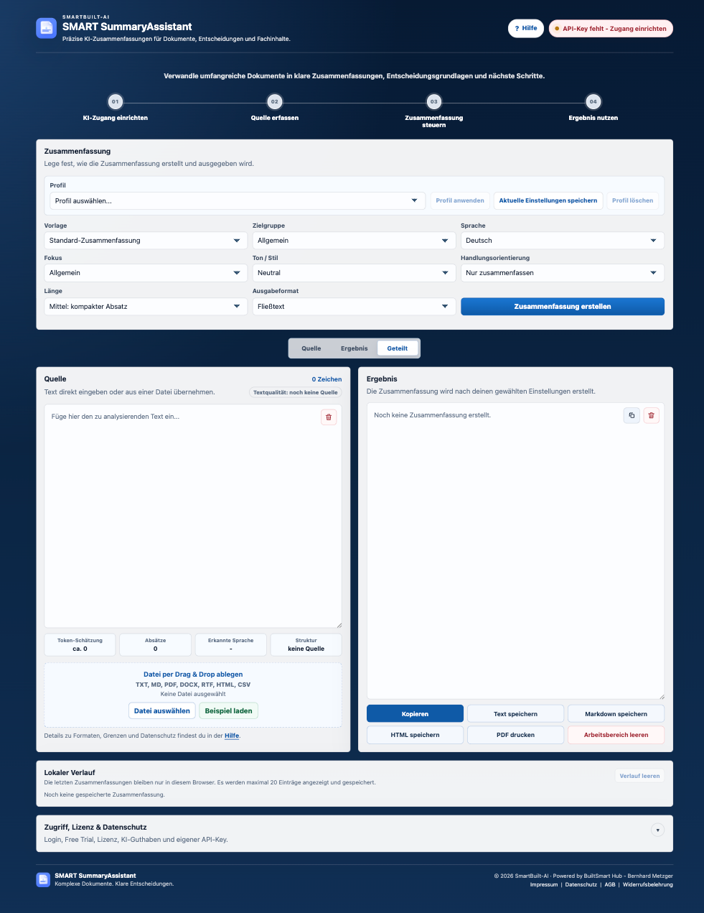

Quelle übernehmen
Text einfügen oder Dateien wie PDF, DOCX, Markdown, HTML, CSV, RTF und TXT importieren.
Browserbasierte Produktivitäts-App
Strukturierte KI-Zusammenfassungen aus Dokumenten und Fachtexten
Verdichte lange Dokumente, Berichte, E-Mails und Fachinhalte in klare Ergebnisse. Steuerbar nach Länge, Sprache, Zielgruppe, Fokus, Ton und Ausgabeformat.
Für Texte, die schneller entscheidbar werden sollen
Text einfügen oder Dateien wie PDF, DOCX, Markdown, HTML, CSV, RTF und TXT importieren.
Vorlage, Zielgruppe, Sprache, Fokus, Stil, Handlungsorientierung und Länge bewusst festlegen.
Zusammenfassung kopieren, im Browser speichern, als Markdown oder HTML exportieren oder als PDF drucken.
Zielgruppe
Für Executive Summaries, Entscheidungsvorlagen, Projektstatus und schnelle Lagebilder aus langen Quellen.
Für Protokolle, Berichte, Spezifikationen, Risiken, offene Punkte und konkrete nächste Schritte.
Für Kundenunterlagen, E-Mails, Fachinformationen und wiederkehrende Zusammenfassungsaufgaben.
Für Menschen, die Recherche, Dokumentenarbeit und Informationsauswertung ruhiger strukturieren möchten.
Workflow
Persönlichen Nutzerzugriff einrichten, Testphase oder Lizenz aktivieren und bei Bedarf einen eigenen API-Key hinterlegen.
Text direkt einfügen, Datei per Drag and Drop übernehmen oder ein Beispiel laden.
Profil nutzen oder Vorlage, Zielgruppe, Fokus, Ton, Länge und Ausgabeformat einzeln festlegen.
Kopieren, exportieren, drucken oder über den Verlauf im Browser später wieder öffnen.
Die App im Einsatz
Die App ist auf produktive Arbeit im Webbrowser ausgelegt: Quelle, Einstellungen, Ergebnis, Verlauf, Nutzerzugriff und KI-Status bleiben in einer klaren Oberfläche erreichbar. Kein Umweg über Marketing, sondern ein Werkzeug für echte Textarbeit.
Direkt zur Arbeitsoberfläche
Funktionen
Fließtext, Stichpunkte, Tabelle, Executive Summary oder Entscheidungsnotiz je nach Ziel.
Standard-Zusammenfassung, Meeting-Protokoll, Management Briefing, Risikoanalyse, Projektstatus und mehr.
Häufig genutzte Parameterkombinationen im Browser sichern und wieder anwenden.
Zeichen, Token-Schätzung, Absätze, erkannte Sprache und Struktur helfen bei der Einschätzung der Quelle.
Die letzten Zusammenfassungen können im Browser gespeichert und später erneut geladen werden.
Ergebnisse und Arbeitsdaten sichern, übertragen und per Browser als PDF drucken.
Datenschutz & Kontrolle
SMART SummaryAssistent läuft browserbasiert und kann auf Windows, macOS und anderen modernen Systemen genutzt werden. Für Testphase, Kauf und Lizenzprüfung ist ein persönlicher Nutzerzugriff vorgesehen. Deine Inhalte können in deinem Browser gespeichert werden; eine automatische Cloud-Synchronisierung ist in Version 1 nicht vorgesehen. Über Export und Import kannst du deine Daten sichern oder übertragen.
Lizenzmodell
Für Anwender, die Dokumente, Berichte und Fachtexte regelmäßig mit KI verdichten und dabei Browser-Speicherung, Export und Import sauber nutzen möchten.
Pro Lizenz ist ein persönlicher Nutzerzugriff vorgesehen. Mehrere Lizenzen bedeuten mehrere getrennte Nutzerzugriffe, keinen gemeinsamen Cloud-Arbeitsbereich.
zzgl. 19% MwSt. · 177,31 € inkl. MwSt. · entspricht 12,42 € netto pro Monat
FAQ
SMART SummaryAssistent läuft browserbasiert und kann über einen Link im Webbrowser geöffnet werden. Eine separate Desktop-Installation ist nicht erforderlich.
Deine Inhalte können im Browser gespeichert werden. Sie werden nicht automatisch in einer Cloud-Datenbank abgelegt oder zwischen Nutzern geteilt.
Die App kann über den Browser auf Windows, macOS und anderen modernen Systemen genutzt werden.
Du erhältst eine Jahreslizenz für 12 Monate. Sie verlängert sich automatisch um weitere 12 Monate, wenn sie nicht spätestens 1 Monat vor Ablauf gekündigt wird.
Ja. Du kannst mehrere Lizenzen derselben App kaufen, zum Beispiel 5 Lizenzen für 5 getrennte Nutzerzugriffe. Jeder Nutzer arbeitet mit eigenem Zugriff; gemeinsame Cloud-Arbeitsbereiche sind in dieser Version nicht vorgesehen.
In der ersten Version wird pro Checkout eine App gekauft. Mehrere unterschiedliche Apps in einem gemeinsamen Checkout sind für später vorgesehen.
Ja. Du kannst die App 7 Tage kostenlos mit vollem Funktionsumfang testen.
Ja. Für Testphase, Kauf und Lizenzprüfung wird ein Nutzerkonto benötigt. Die Inhalte der App können trotzdem im Browser gespeichert bleiben.
Ja. Du kannst deine Daten exportieren und später wieder importieren, zum Beispiel zur Sicherung oder Übertragung auf ein anderes Gerät.
Für professionelle Ergebnisse empfehlen wir Dokumente bis ca. 100.000 Zeichen. Das entspricht je nach Layout etwa 40 bis 55 DIN-A4-Seiten. Größere Dokumente können verarbeitet werden, sollten für beste Qualität jedoch abschnittsweise zusammengefasst werden.
Ja. Die App kann dich bei Zusammenfassungen, Ausgabeformaten und ergänzenden Hinweisen unterstützen. Für KI-Funktionen kann ein eigener API-Key erforderlich sein.